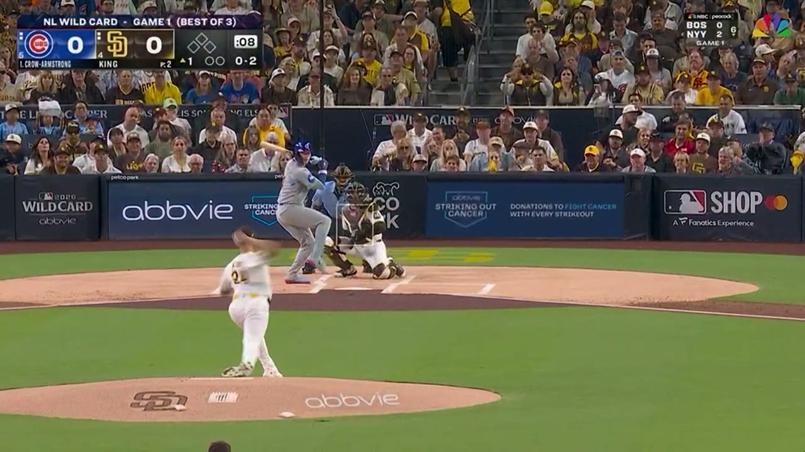

BEYOND THE BOX SCORE
결과는 한 구.
결과는 한 구.
이유는 그 안에.
포수의 요구에서 벤치의 선택까지.
야구의 다음 장면을 읽는 새로운
관점.

MLB · RECORDEDCHC vs SD1회 초 · 4투구 하이라이트
관측 미트 위치−0.05 ft
4투구 하이라이트 · 약 24초
2026 NL WILD CARD / GAME 1 2026.09.29 · PETCO PARK시카고 컵스 @ 샌디에이고 파드리스
THE GAMES
실제 경기에서
시연 경기
실제 경기에서
출발합니다.
CHC @ SD
컵스 · 파드리스2026.09.29 · NL 와일드카드 1차전
마이클 킹 × 피트 크로암스트롱
평가 경기 01PHI @ ATL
필리스 · 브레이브스2026.09.29 · NL 와일드카드 1차전
Truist Park · 57장 평가
평가 경기 02TB @ PHI
레이스 · 필리스2026.09.26 · 정규시즌
Citizens Bank Park · 29장 평가
ONE PITCH. FOUR PERSPECTIVES.
안타 한 개로,
안타 한 개로,
모든 판단을 끝내지 않도록.
좋은 선택과 좋은 실행은 다를 수 있습니다.
목표는 결과 뒤에 숨은
판단의 근거를 보여주는 것.
01 / PREDICT
다음 공을 읽다.
구종과 목표 위치, 스트라이크·파울·안타 확률을 한눈에.
투구 전 전략02 / EXECUTE의도와 실행을 나누다.
요구한 곳에 던졌는지, 제구 이탈이 있었는지 확인.
투수의 실행03 / RESPOND타격의 질을 보다.
좋은 공을 공략했는지, 결과보다 대응의 질을 살펴보기.
타자의 대응04 / DECIDE그때의 선택으로.
투수 유지와 교체 대안을 당시 정보로 비교.
벤치의 판단완성형 서비스를 보여주는 콘셉트 화면입니다. 예측·평가 예시와 실제 관측 자료를 구분해 표시합니다.
OBSERVATION COMES FIRST
첫 번째 근거는,
첫 번째 근거는,
포수의 미트입니다.
AI가 읽은 위치를 사람의 표시와 비교했습니다.
좌표 출력과 기권을
함께 공개합니다.
2.5px
AI·사람 공동 표시 58구
미트 점 차이 중앙값
58/86
같은 변환 기준 좌표 차이 중앙값 약 1.1인치.평가 장면 중 AI 출력
나머지 28장 기권
물리 정확도나 투수 의도를 검증한 값은 아닙니다.
이제, 한 구를 직접 살펴보세요.
분석 스튜디오 열기실제 MLB 기록 · 영상 리플레이 · 최종 서비스 콘셉트